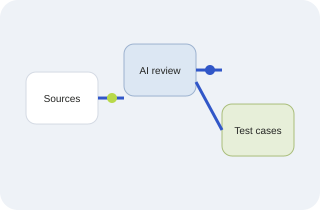
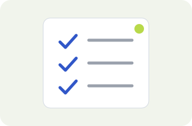
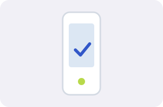

01
AI · Workflow
AI workflow
Alur dari ide hingga test case dengan bantuan AI.


Dhani
Quality Assurance
Pengalaman langsung membangun workflow QA dari testing, otomasi, hingga AI.
Verint / automation Tokopedia / skala & performa Sorabel / E2E Populix / AI
AI · Workflow
Alur dari ide hingga test case dengan bantuan AI.

QA · Toolkit
Skill dan template untuk QA sehari-hari.

Mobile · Automation
Eksperimen pengujian otomatis aplikasi mobile.
